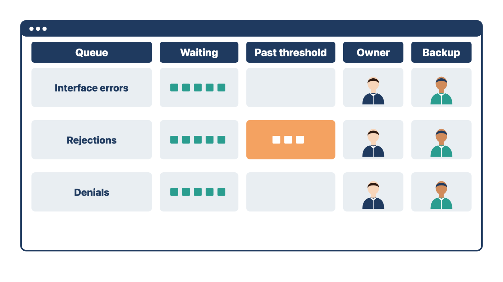

"Enrollment is done" can mean four different things. If you track only one, claims may go out while payments still arrive as paper checks.
Track each step separately, for each payer and each billing location or provider number:
Some payers need several of these steps. Some need none beyond the clearinghouse. Approval can take days or weeks.
Keep an enrollment tracker with one row per payer and location. The client's billing or credentialing lead owns the submissions. You track status. You log each gap as a dependency with an owner and a need date. Where a gap will remain at go-live, ask billing for an interim plan.
Rule: Track the four enrollment steps one by one, for each payer and each location.
Compare two cases. At Cedar Point, the main location is fully enrolled with one payer. The Lakeshore location shows EFT not started for that same payer, so its payments will arrive as checks. At a family practice, the clearinghouse account is active, but the largest payer has not approved claims enrollment. No electronic claims can reach that payer yet. In both cases, one "enrolled" check box would have hidden the gap.
Check yourself
A form with the wrong version, wording, or routing can capture the wrong consent or send a signed form to the wrong record. Forms carry legal and clinical language, so they need owners.
Collect the client's approved forms for each stage of the workflow. Record:
Build and test:
The project team converts approved content. Qualified client authorities approve clinical, privacy, financial, consent, and other controlled wording.
Rule: Load a form only after the client authority who owns its wording approves it.
Compare two cases. At Cedar Point, the front-desk lead sends you a consent form with new wording about sharing records. You hold it until the privacy officer approves the wording. At a pediatric clinic, a nurse asks you to add a question to the vaccine screening form. You hold it until the clinical lead who owns that form approves the change. In both cases, you build and test the form, but its owner approves the words.
Check yourself
Reports and automation depend on clean lists. Three spellings of one appointment type split a report three ways. An old template can copy outdated content into every note.
Codes and controlled values. Systems rely on code sets, status values, task types, appointment types, locations, providers, fees, and similar lists. For each list, define:
Do not let every user create near-duplicate values. "New Patient," "New patient," and "New-Patient" may split reporting and break automation. Billing codes and payer rules need review by qualified coding and billing staff. You load and validate the approved values.
Templates. Templates reduce repeated work. They can also carry old or wrong content forward. Keep a template inventory with:
Test each template with sample scenarios. Include missing information, wrong carry-forward, conditional sections, signature, routing, and the final record. Teach users that a template is a structure. It does not prove its content is right for every patient.
Rule: Every code list and template has a named owner, a version, and a rule for how it changes.
Compare two cases. At one clinic, front-desk staff each add their own appointment types, and the no-show report becomes useless. At another, a physical-exam template still carries last year's screening wording into every note. In both cases, a list or template without an owner drifted until the data could not be trusted.
Check yourself
Payment setup handles money and card data. A missed failure path can double-charge a patient or post a payment to the wrong account.
Payment work can include merchant setup, card or bank options, portals, payment plans, receipts, refunds, reversals, failed payments, posting, reconciliation, and access.
Bring in finance, security, privacy, billing, and vendor authorities as needed. Use approved payment providers. Follow current company and contract rules. Never store card numbers or other payment credentials in project documents.
Test:
Rule: Before go-live, test each way a payment can fail, and reconcile the results.
Compare two cases. At Cedar Point, a test portal payment times out, and the tester submits it again. The test account shows two charges, so you log a duplicate-prevention defect. At a dermatology clinic, a test refund succeeds at the payment provider but never posts to the patient's account. Reconciliation finds the gap before go-live. In both cases, only a failure test and a reconciliation showed the problem.
Check yourself
Every integration keeps running after the project team leaves. If no trained person watches the queues, failures pile up unseen.
For each integration, record:

Do not become the permanent owner by default. Transfer monitoring to an operational role with training, access, and support.
Rule: An integration is done only when a trained staff owner watches its queues.
Compare two cases. At Cedar Point, you watch the lab queue during go-live week. Before you leave, you train the lab coordinator and a backup, and they take over the daily review. At a family practice, a billing specialist is named owner of the rejection queue but cannot open the clearinghouse report. The integration is not done until that person has access and training. In both cases, a name alone does not make an owner.
Check yourself
A two-location clinic is preparing its practice management go-live. One synthetic test claim returned a 999 Accepted and a 277CA Accepted. The technical team wants to mark the clearinghouse integration complete.
The specialist checked the enrollment tracker against the approved payer list. Produced: a list of enrollment gaps by payer and location. Why: a clean test claim shows only that claims can go out, not that payments can come back.
The specialist found the gap. Clearinghouse enrollment was active at both locations. At the second location, the second-largest payer showed claims approved, ERA "submitted," and EFT not started. Produced: a note that remittances would arrive on paper and payments by check. Why: the four enrollment steps are separate, so one approval does not cover the others.
Why do you think the specialist checked enrollment before agreeing that the integration was complete?
The specialist reopened the integration record and logged a dependency. The owner was the clinic's credentialing coordinator. The need date was two weeks before go-live. Produced: a dated, owned dependency entry. Why: the client owns enrollment submissions; the specialist tracks them.
The specialist asked the billing manager for an interim plan. The billing manager decided that a named billing specialist would post paper remittances by hand and reconcile them weekly to deposits. Produced: a recorded interim process. Why: the billing manager owns posting decisions, and go-live should not wait on a gap with a workable plan.
Why did the specialist ask the billing manager instead of choosing the interim process?
Quality control (QC) tested the 835 path with the clearinghouse's synthetic files. Tests covered a full payment, a partial payment, a denial routed to the denial queue, a zero-pay, and a takeback. They also matched a sample EFT trace number to its 835. Produced: end-to-end payment test evidence. Why: payment failures are as important to test as claim failures.
The team marked the integration complete. Produced: a completed integration record with tests, owners, and the open dependency. Why: every gate item now had evidence.
What could go wrong if the team had marked the integration complete after the first clean claim?